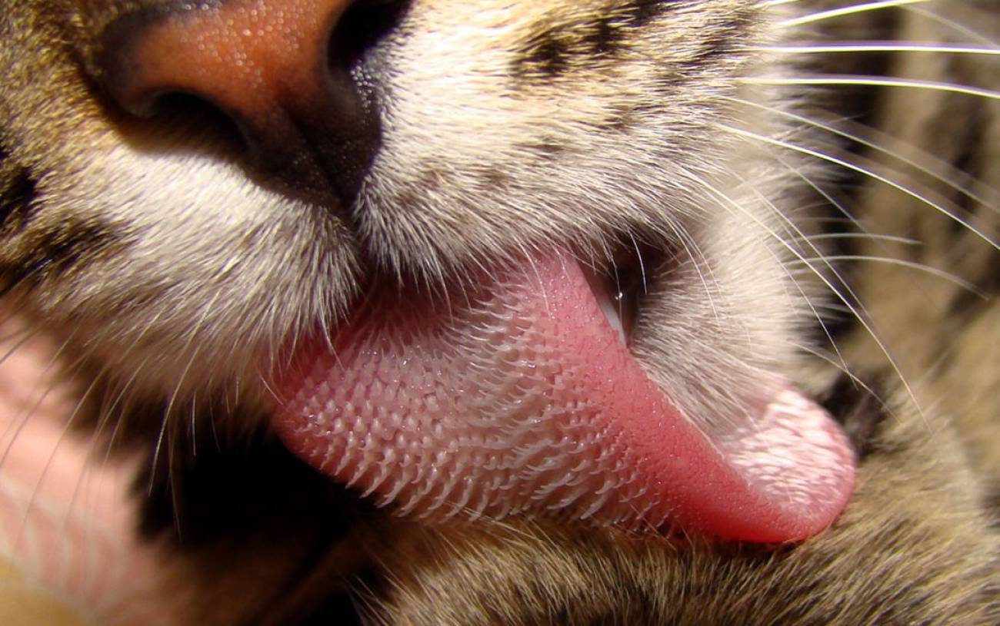

Un gato adulto solo maúlla para comunicarse con los seres humanos.
Las gatas, generalmente, son diestras y los machos, zurdos.
A los gatos les gusta arañar objetos verticales porque les relaja, activa la circulación y tonifica su cuerpo.
La lengua de los gatos esta formada por pequeños ganchos que los ayudan a desgarrar la comida. Por eso se siente áspera al tacto.
Durante esta investigación, los científicos descubrieron que cada una de las cavidades puede almacenar hasta 4.1 microlitros (μL) de saliva, un cantidad equivalente a una décima parte de una gota de colirio. De esta manera, el gato es capaz de penetrar en el pelaje hasta llegar a la piel, lo que le permite disolver los aceites y el resto de materiales de su cuerpo para mantenerse limpio.
Para ver el resto del articulo toque la foto con el marco rojo a su derecha
Odian el agua porque su piel no les aisla bien cuando está mojada.
Son expertos en beber agua y no mojarse un pelo.